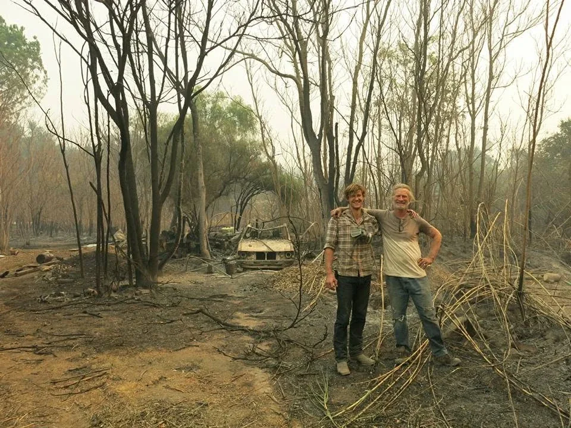
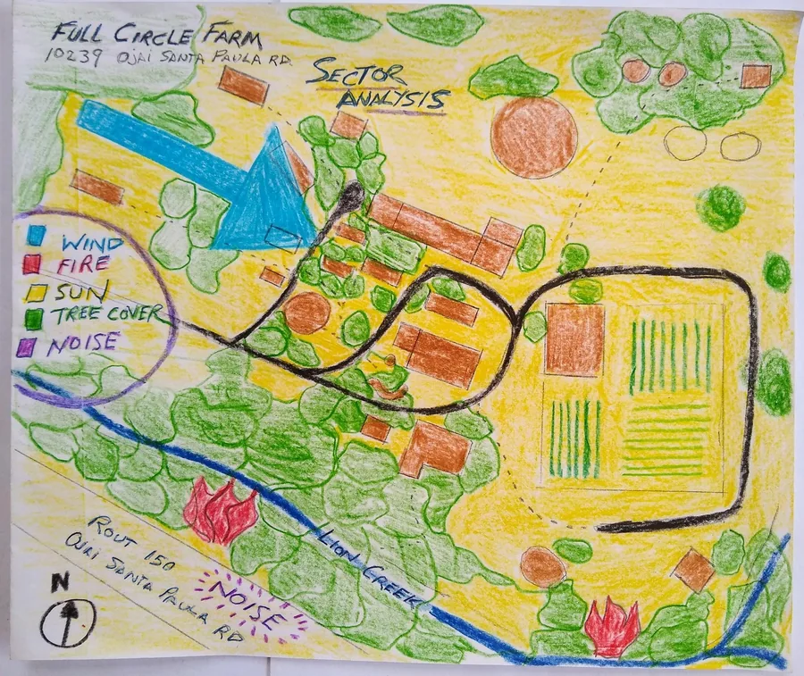
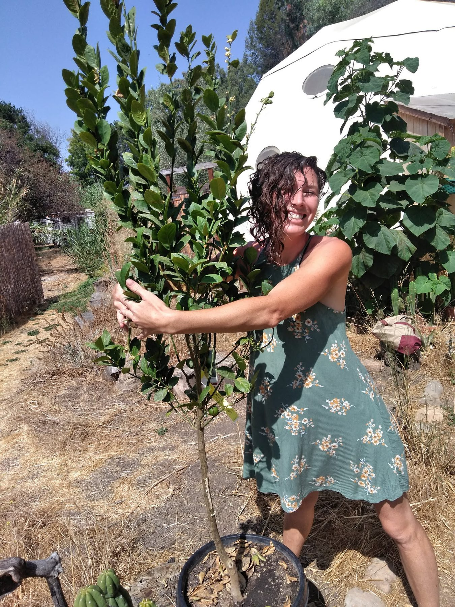
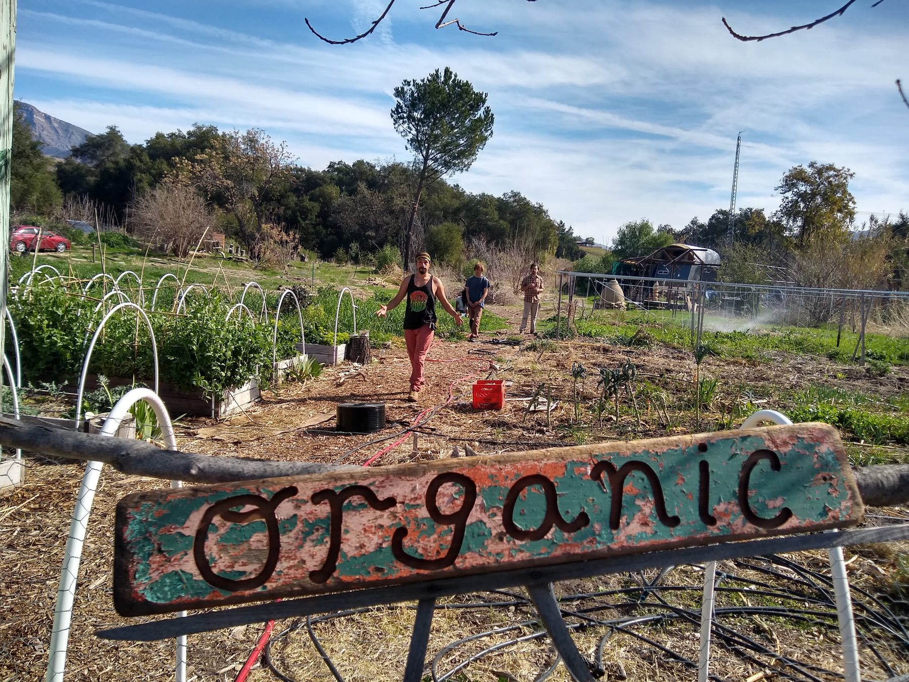
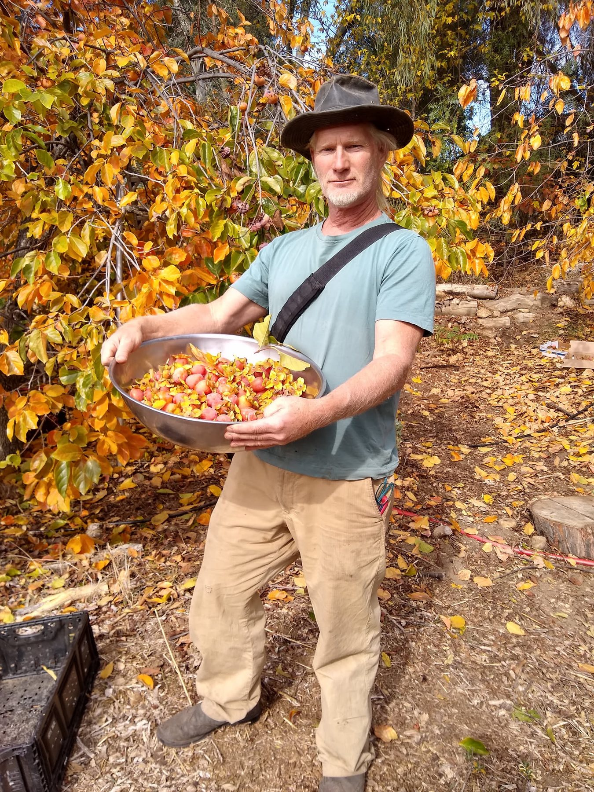
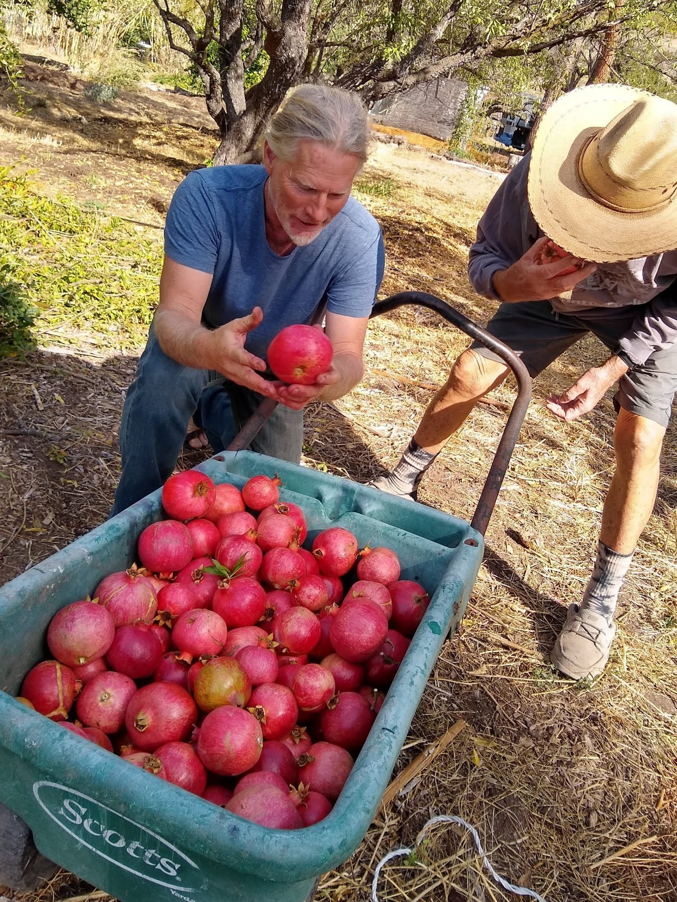
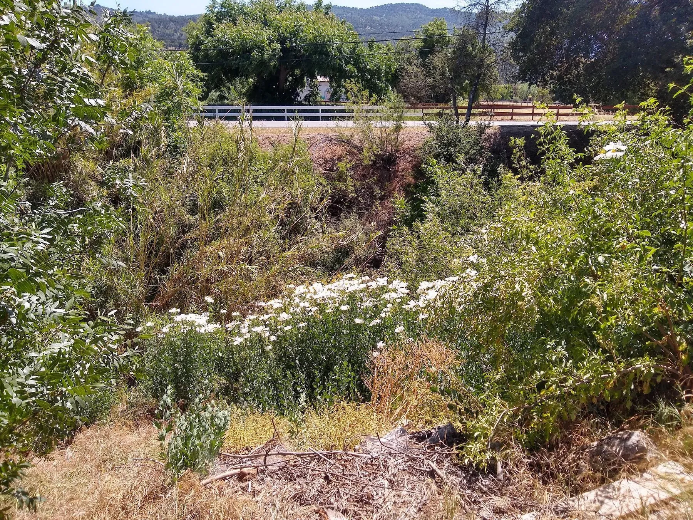
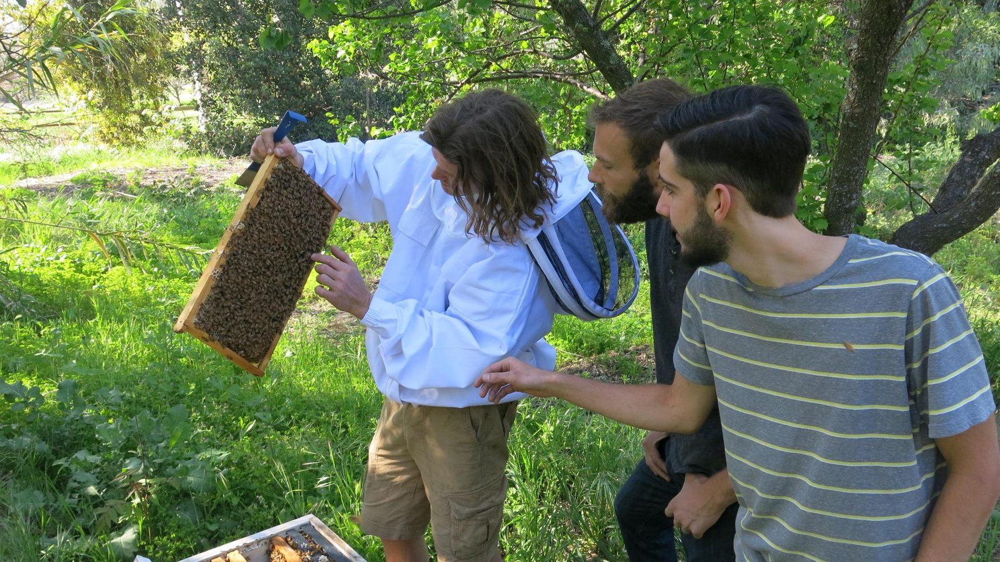

Recharge
Rain, creek flow and cool temperatures replenish soil and expose drainage problems.
Chapter 03 · Climate & ecology atlas
A long dry summer, concentrated winter rain, frost, wildfire, mature shade and a deeply varied creek corridor shape every decision at Full Circle Farm.

A 2022 reading of the land
The workbook begins with Ojai climate-station averages, then corrects that broad picture through observations made on the farm itself: cool shaded paths, a breezy hill, hot orchard edges, humid garden beds and a creek channel that feels almost tropical in winter.
01 · The Mediterranean year
The workbook's rounded monthly schedule shows nearly all precipitation falling between autumn and spring. June through August are recorded as rainless, making stored soil moisture, mulch, shade and irrigation central to summer survival.
Rain, creek flow and cool temperatures replenish soil and expose drainage problems.
Soil moisture and warming days support the strongest burst of annual growth.
Shade, mulch, deep roots and carefully directed irrigation carry the landscape through heat.
Fire danger can remain high before the first dependable storms return.
02 · Heat, cold and the growing season
Ojai's averages suggest a generous growing season, but the workbook also records freezing nights, dozens of days above 90°F and extraordinary heat. The design response is not to chase one ideal temperature; it is to create refuge at both extremes.
Average July/August high reported in the workbook.
Annual days above 90°F in the referenced Ojai climate summary.
Average December/January nighttime low.
Annual nights below 32°F in the regional summary.
03 · Energies entering the site
Sectors are influences that cannot be controlled at their source—wind, fire, sun, floodwater, noise, wildlife and views—but can be opened, redirected, softened or blocked as they cross the property.

The farm was described as a wind dead zone. Ordinary wind usually arrived from the west; dry Santa Ana wind arrived from the east during fire season.
Overgrown vegetation, especially along Lion Creek, was the most urgent natural hazard recorded in the workbook.
Approximately half the property was described as tree-covered. Shade was treated as essential infrastructure for daily life.
Lion Creek rose several feet in winter storms and had occasionally approached the house, then drained quickly.
Road traffic, weekend motorcycles, neighboring activity and barking dogs shaped the property's social edges.
The creek corridor linked the farm to coyotes, birds and other wildlife moving from the surrounding landscape.
04 · Five climates within 5.5 acres
Averages disappear at walking speed. Twenty-five feet of elevation, a wall of trees, regular sprinklers or a steep creek bank are enough to create different planting conditions within a few minutes' walk.


Dense structures and a canopy of chinaberry, tree-of-heaven, evergreens, loquat and redwood create the coolest everyday living area. The workbook especially notes the shade cast by loquats.

Full sun raises heat, while frequent irrigation increases local humidity. Sunflowers were singled out as particularly successful here.

About 25 feet higher than the center, the hill receives more breeze. It is cooler but drier, with large eucalyptus trees competing for water.

The least-developed end of the west orchard remains exposed to year-round sun despite tall eucalyptus overhead. Tough, low-water species are the natural fit.

Steep banks descend roughly 25 feet into the wettest, shadiest part of the property. Winter brought flowing water, damp air and frogs; even after summer drying, cool air continued to settle there.
05 · Living with fire
The workbook names wildfire as the region's most likely natural disaster. It records that the 2017 Thomas Fire burned several buildings and dwellings at Full Circle Farm while missing the main house, workshop and barn.
Brush management was an annual requirement, not a one-time project. A new chipper was intended to turn cut material into a useful resource.
Fire clearance must be selective. Removing every mature tree would sacrifice cooling, habitat and quality of life.
Unmanaged creek-edge growth, deadwood and summer-dry grasses were the most obvious fuel concerns.
The workbook notes one principal entrance and a rear fire exit through a neighbor's property—important constraints during an emergency.
Fire-resistant and regionally adapted plants can help rebuild living cover without recreating dense, unmanaged fuel.
Fire is also an ecological reset. Pioneer plants reveal how open soil begins to cover and heal itself.

06 · Chaparral relationships
The workbook identifies the surrounding ecological pattern as California chaparral and records a small but vivid food web operating across gardens, orchards, chicken areas and the creek corridor.
Predators help regulate small mammals; coyotes and bobcats sometimes also take chickens.

These early-succession plants occupy open or disturbed ground. Some are useful indicators; some require control. Together they reveal how exposed soil begins to reorganize.
07 · Useful and culturally significant plants
The workbook's plant survey connects habitat with traditional, ceremonial and practical uses. These notes are preserved here as part of the historical design record.
An aromatic perennial spreading by rhizomes. The workbook notes Indigenous ceremonial, medicinal and basket-making traditions.
A fragrant California sage with rose-lilac spring flowers, well suited to woodland and coastal-sage conditions.
A deeply significant Southern California native supporting bees, butterflies, birds and cultural traditions; wild populations face multiple pressures.
An aromatic rhizomatous native associated with moist sites, restoration, erosion control and ceremonial use.
A widespread flowering perennial and butterfly-garden plant with a long history of traditional wound-related use.
08 · A friendship and a wider inquiry
Alpha lived at Full Circle Paradise and later created the Climate Water Project. His work extends a question that appears throughout this design: how do living landscapes slow, hold, cycle and return water?

For readers who want to continue beyond the farm-scale atlas, the Climate Water Project explores water cycles, ecology, land restoration and climate through essays and long-form conversations.
09 · Design response
The climate atlas does not point to one heroic intervention. It points to a web of modest responses that reinforce one another.
Keep the canopy that protects homes and shared pathways, while gradually addressing hazardous trees.
Use mulch, roots, swales and repaired drainage to turn concentrated storms into stored soil moisture.
Match species to the five observed microclimates instead of treating the whole farm as one exposure.
Maintain access and defensible space while converting brush and woody waste into useful material where appropriate.
Support birds, predators and pollinators through layered vegetation and refuge near productive areas.
Return to the maps after drought, fire, storms and management changes; revise the design from what the land reveals.